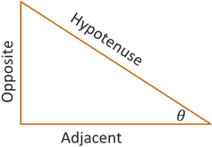
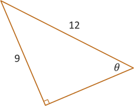

Right Triangle Trigonometry
Trigonometric Functions
Trigonometric Functions
The development of our understanding of trigonometry, and in particular the trigonometric functions, has a long history spanning many centuries and cultures. There are two primary methods that we now use to explore and describe these trigonometric functions, which are based on two different but related aspects of geometry. In this lesson, we will define and work with the trigonometric functions as ratios of the lengths of right triangles. These ratios remain true regardless of the size of a triangle due to properties of similar triangles. Later, we will define and describe these functions in terms of circles and then periodic functions.
To set up our geometry and some basic vocabulary, consider the following right triangle. If we look at the measure of one of the acute angles, which we can label as the Greek letter "theta," or \(\theta\), then we can describe the sides of the triangle in terms of their relative location from this angle.
We already have a name for the side opposite the right angle, which is called the Hypotenuse. So we say the Opposite side is the side across the triangle from \(\theta\) while the Adjacent side is the side next to \(\theta\). Now we can define our trigonometric functions in terms of this angle and the ratio of the sides of the triangle.
For a right triangle with given acute angle \(\theta\), we define the ratio of each pairing of sides using the following functions.
Note that we normally pronounce the full name of each function rather that is abbreviation. So we would pronounce \(\sin(\theta)\) as "sine of theta." Also, the expression \(\sin(\theta)\) does not represent multiplication. We are not multiplying sine times theta. The angle \(\theta\) is the input of the \(\sin(\theta)\) function, just like \(x\) is the input of the \(\ln(x)\) function. Also, sometimes we may not include the parenthesis, so \(\sin \theta\) is the same as \(\sin(\theta)\).
A common practice to remember the ratios for sine, cosine, and tangent uses the acronym SOHCAHTOA. The "SOH" part represents Sine, Opposite, and Hypotenuse, which gives the ratio for sine. The "CAH" part represents Cosine, Adjacent, and Hypotenuse, which gives the ratio for cosine. And the "TOA" part represents Tangent, Opposite, and Adjacent, which gives the ratio for tangent.
Example: Determine the exact value of the six trigonometric functions given the triangle below.
First, we need to find the missing side length using the Pythagorean Theorem.
\[\begin{align*} a^2 + b^2 &= c^2 \\ 9^2 + b^2 &= 12^2 \\ 81 + b^2 &= 144 \\ b^2 &= 144 - 81 = 63 \\ b &= \sqrt{63} = \sqrt{9 \cdot 7} \\ b &= 3\sqrt{7}\end{align*}\]Now we can list out the ratios for each trig function, simplifying where possible.
Notice that the cosecant, secant, and cotangent functions are the reciprocals of the sine, cosine, and tangent functions, respectively.
Self-Check #1: Given a right triangle with acute angle \(\theta\), what is the value of \(\sin(\theta)\) if \(\cos(\theta) = \frac{8}{17}\)? (Select the most appropriate response.)
(Answer: A) -- To find the value of \(\sin(\theta)\), we need the Opposite side and the Hypotenuse. From the given value for \(\cos(\theta)\), we can say that the Adjacent side is 8 and the Hypotenuse is 17. We can find the Opposite side using the Pythatorean Theorem, \(a^2 + 8^2 = 12^2\). This results in \(a = 15\). Now with an Opposite side of 15, we get \(\sin(\theta) = \frac{15}{17}\).
©2025 M4thG33x (new window) Some Rights Reserved.